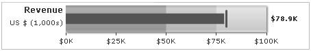

| Creating a simple Bullet graph | ||||||||||||
Here, we'll create a simple bullet graph to show the revenue figures for a fictional company. The graph will look as under: |
||||||||||||
|  | ||||||||||||
The various tasks involved in building this graph are:
Let's see how to do each of these. |
||||||||||||
| Data for the graph | ||||||||||||
First, we decide the qualitative ranges of revenue performance for that company. Let's assume it to something as under: |
||||||||||||
|
||||||||||||
Also, we intend to plot the following values: Intended revenue: $80,000 |
||||||||||||
| The XML/JSON for the above data will look as under: | ||||||||||||
<chart lowerLimit="0" upperLimit="100" caption="Revenue" subcaption="US $ (1,000s)" numberPrefix="$" numberSuffix="K" showValue="1"> {
"chart": {
"lowerlimit": "0",
"upperlimit": "100",
"caption": "Revenue",
"subcaption": "US $ (1,000s)",
"numberprefix": "$",
"numbersuffix": "K",
"showvalue": "1"
},
"colorrange": {
"color": [
{
"minvalue": "0",
"maxvalue": "50",
"color": "A6A6A6"
},
{
"minvalue": "50",
"maxvalue": "75",
"color": "CCCCCC"
},
{
"minvalue": "75",
"maxvalue": "100",
"color": "E1E1E1"
}
]
},
"value": "78.9",
"target": "80"
} |
||||||||||||
For detailed explanation on JSON data format click here. When you now run this data against the horizontal bullet graph, you'll get something as under: |
||||||||||||
| See it live! |